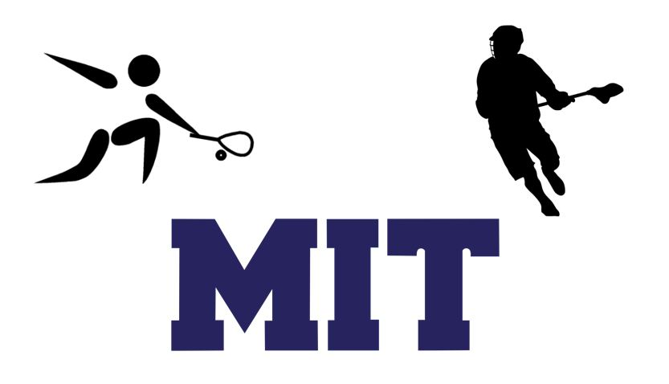

All Levels Coaching.
Athletics and Academics go hand in hand. As a current doctorate student at the Massachusetts Institute of Technology, business owner, and former D1 collegiate athlete, I know the commitments involved to be a true student-athlete and professional.
Currently, I offer private coaching sessions in squash, racquetball, and lacrosse; my services are best utilized by athletes at the highschool- and collegiate-setting (ages 14-24+) that are ready to make an immediate impact through private instructure. My coaching goals will be to grow your existing skillset, bridge the gaps in your game, and lay a path forward for you to be able to play to your best ability at the highest levels of play.
Additionally, I offer private academic tutoring and mentoring. Education is priceless; I know, firsthand, the benefits that a high-quality education provides. My goal is to help you grow your knowledge-base in difficult STEM subjects as well as create top-tier application packages for your dream schools, e.g. Harvard, Yale, MIT, Stanford, Columbia, etc. Further, I help curate and facilitate plans for collegiate-athletes poised to enter the transfer portal; transferring institutions may seem daunting, but can be made easy and effective with the right mindset and strategies.
Upon request I will provide a detailed Curriculum Vitae or consultation/quote to help you achieve your athletic goals.
If you'd like, please feel free to send me a message regarding more information on my academic and athletic coaching regiments.